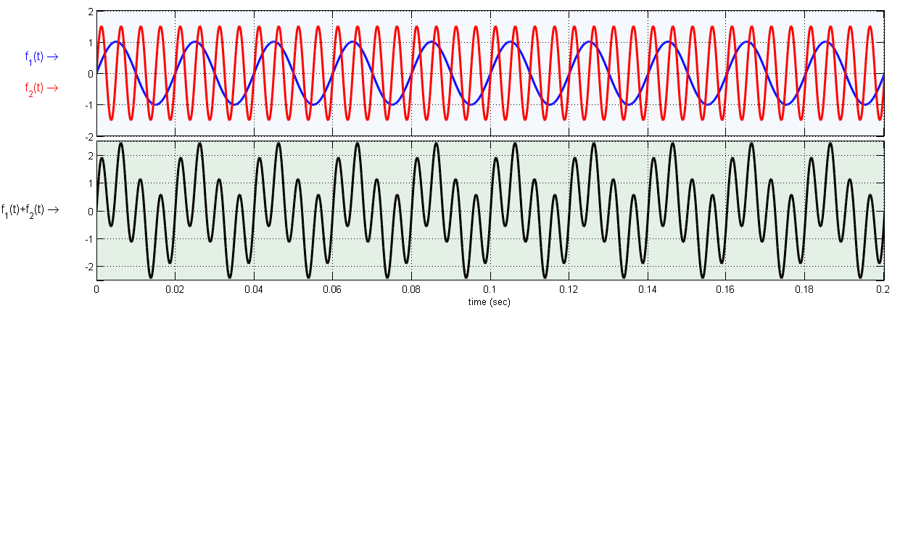
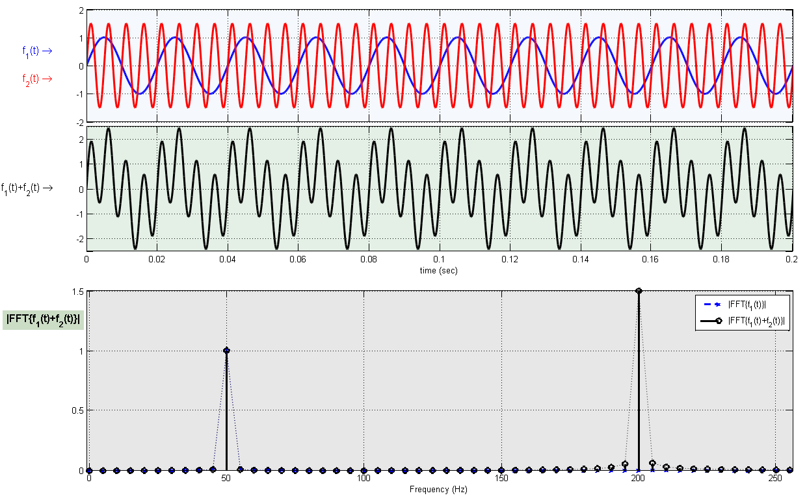

Copyright Notice
Copyright (c) 2015, Mehmet E. Yavuz All rights reserved.
Redistribution and use in source and binary forms, with or without modification, are permitted provided that the following conditions are met:
* Redistributions of source code must retain the above copyright
notice, this list of conditions and the following disclaimer.
* Redistributions in binary form must reproduce the above copyright
notice, this list of conditions and the following disclaimer in
the documentation and/or other materials provided with the distributionTHIS SOFTWARE IS PROVIDED BY THE COPYRIGHT HOLDERS AND CONTRIBUTORS "AS IS" AND ANY EXPRESS OR IMPLIED WARRANTIES, INCLUDING, BUT NOT LIMITED TO, THE IMPLIED WARRANTIES OF MERCHANTABILITY AND FITNESS FOR A PARTICULAR PURPOSE ARE DISCLAIMED. IN NO EVENT SHALL THE COPYRIGHT OWNER OR CONTRIBUTORS BE LIABLE FOR ANY DIRECT, INDIRECT, INCIDENTAL, SPECIAL, EXEMPLARY, OR CONSEQUENTIAL DAMAGES (INCLUDING, BUT NOT LIMITED TO, PROCUREMENT OF SUBSTITUTE GOODS OR SERVICES; LOSS OF USE, DATA, OR PROFITS; OR BUSINESS INTERRUPTION) HOWEVER CAUSED AND ON ANY THEORY OF LIABILITY, WHETHER IN CONTRACT, STRICT LIABILITY, OR TORT (INCLUDING NEGLIGENCE OR OTHERWISE) ARISING IN ANY WAY OUT OF THE USE OF THIS SOFTWARE, EVEN IF ADVISED OF THE POSSIBILITY OF SUCH DAMAGE.
Contents
Sample parameters
clear all; clc; freq1 = 50; % Frequency in Hertz freq2 = 100; T1 = 1/freq1; % periods T2 = 1/freq2; Nt = 50; % Numberof samples in time per period dt = min(T1,T2)/Nt; % time step t=0:dt:(10*max(T1,T2)); Nrepetition=1; NFFT=Nrepetition*length(t); Fs = NFFT; % Sampling frequency T = 1/(Fs); % Sample time isVideoOn = 0; % To turn on/off for jpeg dumpong which is later for generating the video iBufferTime=100; % Buffer time steps to stop during progression (for animation purposes) func=zeros(1,length(t)); func2=zeros(1,length(t)); for Iteration=1:5 for it=1:(length(t)+iBufferTime)
if (it <=length(t))
func(it)=sin(2*pi*freq1*t(it));
if (Iteration == 2)
func2(it)= 1.5*sin(2*pi*freq2*t(it));
end
if (Iteration == 3)
func2(it)= 1.5*sin(2*pi*2*freq2*t(it));
end
if (Iteration == 4)
L2=floor(length(t)/2);
if (it <=L2)
func2(it)= 1;
else
func2(it)= 0;
end
end
if (Iteration == 5)
L2=floor(length(t)/2);
if (it <L2 || it >= L2)
func2(it)= 0;
end
end
else
% Keep Same (do nothing) - freezing in time
end
Lw=2; Fs=10;
f6=figure (6); clf; set(gcf,'Color',[1 1 1]);
sp1=subplot(10,1,1:3); set(gca,'FontSize',Fs);
plot(t,func,'b','LineWidth',Lw,'LineSmoothing','on'); grid on; hold on;
text(-0.018,0.5,1,'f_1(t) \rightarrow','FontSize',Fs+2,'Color','b')
plot(t,func2,'r','LineWidth',Lw,'LineSmoothing','on'); grid on;
ylim([-2 2])
set(gca,'xticklabel',[]);
set(gca,'OuterPosition',[ -0.04 0.75 1.13 0.25])
text(-0.018,-0.5,1,'f_2(t) \rightarrow','FontSize',Fs+2,'Color','r')
set(sp1,'Color',[0.9608 0.9765 0.9922]);
funcSum=func+func2;
sp3=subplot(10,1,4:6); set(gca,'FontSize',Fs);
plot(t,funcSum,'k','LineWidth',Lw,'LineSmoothing','on'); grid on;
xlabel('time (sec)');
ylim([-2.5 2.5])
set(gca,'OuterPosition',[ -0.04 0.45 1.13 0.3])
text(-0.024,0,1,'f_1(t)+f_2(t) \rightarrow','FontSize',Fs+2)
set(sp3,'Color',[0.8941 0.9412 0.9020]);
funcSum_rep=[];
func_rep=[];
for ik=1:Nrepetition
funcSum_rep=[funcSum_rep funcSum];
func_rep=[func_rep func];
end
FD_funcSum = fft(funcSum_rep,NFFT)/NFFT;
FD_func = fft(func_rep,NFFT)/NFFT;
f=(0:(NFFT-1))/(NFFT*dt);
 Take FFT and plot single-sided amplitude spectrum.
sp4=subplot(10,1,7:10); set(gca,'FontSize',Fs); stem(f(1:(floor(NFFT/2)+1)),2*abs(FD_func(1:(floor(NFFT/2)+1))),'--bx','LineWidth',Lw); hold on; grid on; stem(f(1:(floor(NFFT/2)+1)),2*abs(FD_funcSum(1:(floor(NFFT/2)+1))),'-ko','LineWidth',Lw); plot(f(1:(floor(NFFT/2)+1)),2*abs(FD_func(1:(floor(NFFT/2)+1))),':b','LineWidth',Lw-1,'LineSmoothing','on'); hold on; grid on; plot(f(1:(floor(NFFT/2)+1)),2*abs(FD_funcSum(1:(floor(NFFT/2)+1))),':k','LineWidth',Lw-1,'LineSmoothing','on'); xlabel('Frequency (Hz)') xlim([-1 256]) set(gca,'OuterPosition',[ -0.04 0.01 1.13 0.42]) Ylim4=get(sp4,'Ylim'); t1=text(-31,1.25,10,'{\bf |FFT\{f_1(t)+f_2(t)\}| }','FontSize',Fs+2); set(t1,'BackgroundColor',[0.8 0.866667 0.776471]); legend('|FFT\{f_1(t)\}|','|FFT\{f_1(t)+f_2(t)\}|'); set(sp4,'Color',[0.905882 0.905882 0.905882]); ylim([0 1.5])
Dumping snapshots to jpg files
set(gcf, 'InvertHardCopy', 'off'); if (isVideoOn == 1) set(gcf,'PaperPositionMode','auto'); % set(gcf,'PaperUnits','inches','PaperPosition',[0 0 48 27]) Name='JPEG/FFTAnimationStem_'; itx=it + (Iteration-1)*(length(t)+iBufferTime); disp(['itx= ' num2str(itx)]); if (itx <10) print (f6, '-djpeg100', [Name '000' num2str(itx) '.jpg'],'-r96') elseif (itx>=10 && itx <100) print (f6, '-djpeg100', [Name '00' num2str(itx) '.jpg'],'-r96') elseif (itx>=100 && itx <1000) print (f6, '-djpeg100', [Name '0' num2str(itx) '.jpg'],'-r96') else print (f6, '-djpeg100', [Name '' num2str(itx) '.jpg'],'-r96') end end pause(0.01);
end end